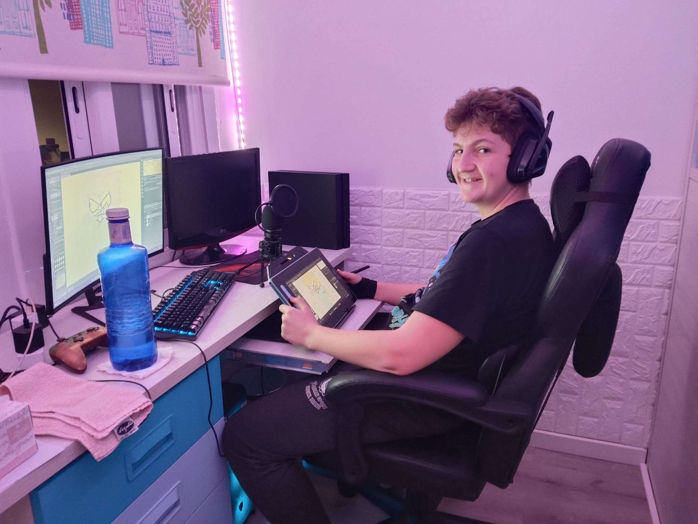

Introduction
Hello! Welcome to my personal portfolio, my name is Aitor Torrijos Quintero (known in the vast world of the Internet as Aitornado _8). I was born on June 5th 2008 and I am set in Barcelona, Spain. Currently, I am studying an Intermediate Vocational Training Cycle specialized on Microcomputer Systems and Networks, and I have planned to go to a Higher Level Vocational Training Cycle after this one. The truth is, that my real intentions are to go and study on the ECIB (Cinematographic and Animation School from Barcelona) their Animation Diploma. In my free time, I like to make pieces of art about things that I enjoy, like videogames, groups of music, or series. I am also learning to play guitar, as well as to make my own music compositions. I use my capabilities to make projects as a letter of love to art and entertainment, and to get more experience, and be able to make better things in the future aswell.
Over the past 4 years, I've made a lot of art works, which can be seen on The Gallery page.